Горячие клавиши
Горячие клавиши
Сочетания для Windows. Часть клавиш работает только при фокусе на холсте или Timeline.
Инструменты
| Клавиша | Инструмент |
|---|---|
| B | |
| Shift+B | 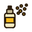 Spray |
| E | 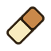 Eraser |
| I / удержание Ctrl | 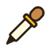 Color picker |
| G | 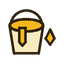 Fill |
| Shift+G | 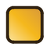 Gradient |
| L | 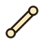 Line |
| Shift+L | 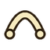 Curve |
| U | 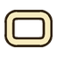 Rectangle |
| Shift+U | 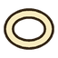 Ellipse |
| D | 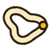 Contour |
| Shift+D | 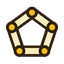 Polygon |
| M | |
| Shift+M | 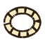 Elliptical marquee |
| Q | 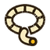 Lasso |
| Shift+Q | 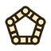 Polygonal lasso |
| W | |
| V | 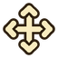 Move |
| H | 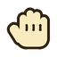 Hand |
| Z | 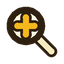 Zoom |
| Shift+C | |
| C | Изменение размера холста |
Blur, Jumble, Filled rectangle, Filled ellipse, Frame lighting, Mirror и Noise fade area выбираются кнопками в панели Tools или меню Tool.
Файл и правка
| Ctrl+S | Сохранить |
| Ctrl+Shift+S | Сохранить как |
| Ctrl+W | Закрыть документ |
| Ctrl+Z / Ctrl+Y | Отмена / возврат |
| Ctrl+C / Ctrl+V | Копировать / вставить выделение (в Timeline - кадры) |
| Ctrl+A | Выделить всё (в Timeline - все кадры) |
| Ctrl+D | Снять выделение |
| Delete | Очистить выделенные пиксели |
Справка и масштаб интерфейса
| F1 | Открыть документацию (Help > Documentation) |
| Ctrl++ / Ctrl+- | Увеличить / уменьшить масштаб интерфейса (1x-3x) |
| Ctrl+Shift+0 | Подобрать масштаб интерфейса автоматически |
Мышь на холсте
| Колесо | Масштаб холста (1x-64x) |
| Ctrl+колесо | Размер кисти (1-50) |
| Перетаскивание инструментом Hand (H) | Сдвиг вида |
| Удержание кнопки семейства в Tools | Меню родственных инструментов |
| Ctrl+клик по ползунку | Ввод точного значения |
Вид
| F | Вписать холст в окно |
| Ctrl+G | Пиксельная сетка |
| Esc | Отменить текущую операцию / выйти из режима |
Timeline
| ← / → | Предыдущий / следующий кадр (Shift - выделить диапазон) |
| Home / End | Первый / последний кадр |
| ↑ / ↓ | Слой выше / ниже |
| Insert | Добавить кадр |
| Ctrl+Insert | Дублировать кадр |
| Delete | Удалить выбранный кадр или слой |
| Backspace | Удалить текущий кадр |
| Ctrl+I | Режимы Inbetween |
| Space | Воспроизведение / пауза |
| Ctrl+Shift+T | Создать анимацию из выбранных кадров |
| Ctrl+клик, Shift+клик | Выбор кадров по одному / диапазоном |
Предсказание правок
| Tab | Принять подсказку |
| Shift+Tab | Следующая подсказка |
| Esc | Отклонить |
Выделение и преобразование
| Shift + выделение | Добавить |
| Ctrl / Alt + выделение | Вычесть |
| Shift+Ctrl + выделение | Пересечение |
| Ctrl при повороте | Шаг 45 градусов |
Поиск по документации
Клавиша / на этом сайте переводит курсор в строку поиска.